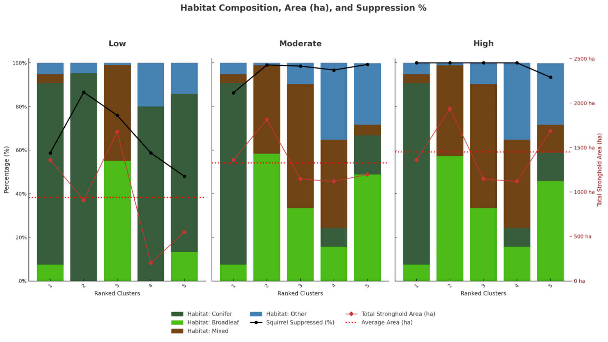

Please Marten the Gap: Spatial Prioritisation for Red Squirrel Conservation
Project Overview
Invasive grey squirrels have displaced native red squirrels from much of the United Kingdom, and culling programmes are increasingly controversial and underfunded. This dissertation develops a spatial prioritisation framework to guide red squirrel conservation as the native pine marten, a predator that selectively predates the niave grey squirrel, recolonises Cumbria after being nearly functionally extinct since the 1700s. The approach combines geospatial analysis of landscape ecology with practical conservation constraints to identify reserves, or Strongholds, that maximise red squirrel persistence under three scenarios of future grey squirrel suppression by the pine marten (low, moderate and high).
Working with open-source data and libraries, I built a Python-based algorithm that models how pine martens reduce grey squirrel densities and then ranks candidate strongholds using a multi‑criteria decision analysis (MCDA). Criteria include the remaining grey squirrel density post predator recovery representing the cost of grey squirrel management within and 3km around a reserve, the total core habitat area available for red squirrels as a function of core to edge ratio, and the feasibility of management, which incorporates estimates of landowner willingness derived from past participation in woodland grant schemes and ongoing incentives. By exploring trade‑offs between ecological benefits and management constraints, the study provides an evidence-based roadmap for NGOs to allocate limited resources to most effectively take advantage of re-introduction schemes to achieve maximal conservation gains.
This dissertation project recieved a 78 final grade.
Motivation and Relevance
Red squirrel conservation in northern England depends on volunteer-led schemes and piecemeal funding. Traditional strategies focus on conifer plantations and rely heavily on trapping and shooting, practices that more recently attract public opposition and may exclude landholders who lack access to grants or expertise. The return of pine marten offers a humane, self-sustaining and widely supported alternative control method, but managers need guidance on where predator recovery will most benefit red squirrels and how suppression will interact with landownership patterns.
This project was motivated by four questions:
- How will grey squirrel distribution respond to pine marten recovery under different predation efficiencies?
- Where should conservation NGOs prioritise strongholds when balancing grey cost, core habitat area and management feasibility?
- How robust are existing policies like the Lake District Stronghold Complex when predator dynamics change?
- How can a transparent modelling framework build trust with stakeholders and adapt to new ecological data?
By addressing these questions, the dissertation bridges academic modelling and real‑world conservation. It demonstrates that conservation planning must account for human dimensions such as landowner incentives, grant eligibility and community support; factors often overlooked in purely ecological analyses. The outputs are therefore directly relevant to NGOs aiming to design inclusive, adaptable reserve networks that complement their ongoing conservation work which relies heavily on public support.
Methodology and Key Decisions
The analysis integrates landscape ecology, geospatial programming and computational decision making:
Suppression modelling: Baseline grey squirrel densities were reduced using three pine marten suppression coefficients derived from field studies. The residual density surface becomes the grey cost criterion in the MCDA.
Habitat and feasibility mapping: High-resolution land cover and woodland data were reclassified to identify suitable red squirrel habitat patches. To represent management feasibility, I compiled proxies for landowner engagement, including past uptake of woodland creation grants, Countryside Stewardship schemes and Forestry England ownership. Each 100 m grid cell receives a feasibility score from 1 (Low) to 4 (High). This layer ensures that strongholds are not only ecologically suitable but also realistic to manage.
Cluster-based MCDA: A custom greedy algorithm grows clusters of habitat patches from seed sites, scoring each cluster on grey cost, core area and feasibility. By evaluating thousands of candidate strongholds across suppression scenarios, the algorithm reveals the optimal balance between ecological benefits and practical constraints. Unlike ‘black box’ optimisers, the scoring is transparent and allows managers to explore how weighting different criteria would change priorities.
Correlation analysis: The influence of each criterion on final scores changes with the level of suppression. At moderate suppression the grey cost carries most weight; at high suppression core area dominates; feasibility remains consistently important but secondary. Understanding these shifts helps NGOs decide when to prioritise habitat expansion versus controlling invasive populations.

Figure 1: Workflow diagram showing suppression modelling, clustering and MCDA scoring.
Results and Findings
Dynamic stronghold selection: The model consistently identifies Whinlatter Forest as the top stronghold under all scenarios. An expanded Greystoke site ranks second under low suppression, while Elterwater emerges as a robust candidate across scenarios. These findings suggest that some Lake District strongholds (e.g. Thirlmere and Whinfell) may offer poor return on investment compared with alternative sites.
Shift from conifers to mixed woodlands: Significant pine marten suppression shifts priority strongholds away from conifer plantations towards broadleaf and mixed woodlands. This challenges current policy that favours conifers and highlights the importance of diverse habitats for red squirrel resilience.
Trade‑offs evolve with suppression: Correlation analysis shows that when grey squirrels are abundant, reducing grey cost is the primary driver of stronghold scores. As suppression increases and grey densities decline, the value of core habitat area rises, and feasibility becomes more influential. This underscores the need for adaptive management as predator populations recover.
Emerging opportunities for adaptive management: The model recommends staging investments, expanding stronghold boundaries progressively as pine marten densities grow. For example, Elterwater offers early benefits and can be expanded over time as suppression spreads. Such phased approaches allow NGOs to balance short‑term successes with long‑term resilience while working within funding and staffing constraints.

Figure 2: Algorithmically Selected Strongholds
Implications for NGOs
The dissertation’s framework follows the most recent best practices for informing invasive species control, reserve design and community-based conservation using computational methods.
Evidence‑led site selection: The prioritisation algorithm provides a ranked list of woodland complexes that account for ecological impact and local feasibility. This helps NGOs target limited resources where they will deliver the greatest conservation benefit and where partnerships with landholders are most promising.
Transparent and replicable tools: All code is written in Python using openly available libraries, allowing organisations to replicate, audit and customise the analysis. This openness fosters collaboration and trust among stakeholders, addressing concerns about opaque optimisation tools.
Integration of human dimensions: By incorporating grant histories, management policies and landowner willingness, the framework reflects the practical challenges faced by NGOs. It encourages planners to engage proactively with communities and to consider how public funding schemes influence conservation opportunities.
Adaptive management: The results demonstrate that conservation priorities should evolve as pine marten populations grow. NGOs can use the scenario outputs to plan phased investments, monitor predator recovery and adjust strategies as ecological conditions change.
Skills and Experience
This dissertation built on fieldwork and analytical skills developed through modules in biogeography, ecology and human-wildlife relationships. Key competencies demonstrated include:
Geospatial programming: Developed a 2,000‑line Python workflow for data ingestion, raster and vector processing, cluster analysis and visualisation. Efficient spatial indexing, vectorised operations and robust error handling ensured that the model runs quickly and reproducibly.
Landscape ecology metrics: Applied concepts like core-to-edge ratios, habitat connectivity and species carrying capacity to inform stronghold design.
Feasibility assessment: Created management feasibility proxies based on woodland grant uptake, land tenure and historic stewardship participation, ensuring that recommendations align with real-world constraints.
Communication and collaboration: The project’s outputs are documented in a comprehensive dissertation and summarised in this portfolio for a non-technical audience. Working with academic supervisors and data providers honed collaboration skills that translate directly to partnerships with NGOs, land managers and volunteers.
Figures and Visual Outputs
Placeholder images and interactive maps would be inserted here to illustrate the study area, workflow and top‑ranking strongholds. For example:
Figure 3: Study area and Lake District Stronghold Complex.

Figure 4: Comparison of grey squirrel density in existing strongholds under low, moderate and high pine marten suppression scenarios.

Figure 5: Stronghold Analysis, investigating how prioritised habitat composition, core area and grey squirrel density changes under suppression scenarios

Resources
Final Reflection
The study demonstrates that embracing a returning predator can transform invasive species management. By linking pine marten recovery with a transparent prioritisation tool, it moves beyond theoretical discourse to provide actionable guidance for NGOs. The framework reveals hidden trade‑offs between ecology and feasibility, challenges assumptions about conifer-dominated reserves and proposes adaptive pathways that align with human and ecological realities.
Most importantly, the project underlines the necessity of pragmatic conservation. Sustainable outcomes depend on partnerships with landowners, volunteers and communities who care about wildlife and livelihoods. This perspective informs my aspirations to contribute meaningfully to conservation NGOs in the UK and beyond.